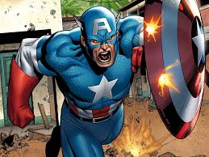

COMIcSam
PILOT
* We can all be
Super Heroes
DC
Batman
Superman
W W
Marvel
C America
Spider Man
X-Men
Gallery
Top
ShowCase Your Work →
Capitán AméricaPersonaje de Marvel Comics, Primera aparición Captain America Comics #1 (marzo de 1941) Creador(es) Joe Simon Jack Kirby Interpretado por Matt Salinger (1990) Chris Evans (2011-presente) Información Nombre original Steven Grant Rogers Alias Capitán América Estatura 1,63 m Peso 95 kg Nacimiento 4 de julio Especialidad Sentidos, agilidad, velocidad y fuerza sobrehumanas. Gran habilidad con armas de fuego y con su escudo. Instinto de liderazgo, gran resistencia, inmune a gases y enfermedades, curación y regeneración acelerada. Genio táctico, artista marcial, acróbata experto Equipamiento Escudo de vibranio ,
El Capitán América fue diseñado como un supersoldado patriota que luchaba frecuentemente contra las potencias del Eje en la Segunda Guerra Mundial, y fue el personaje más popular de Timely Comics durante el período de guerra. La popularidad de superhéroes se desvaneció después de la guerra, y el cómic del Capitán América dejó de editarse en 1950, con un breve resurgimiento en 1953.
Desde que Marvel Comics revivió al personaje en 1964, el Capitán América se ha mantenido en publicación. El Capitán América viste un traje que lleva un motivo de la bandera de los Estados Unidos, y está armado con un escudo.
A pesar de que el Capitán América a menudo lucha por mantener sus ideales como un hombre fuera de su tiempo con sus realidades modernas, él sigue siendo una figura muy respetada en su comunidad, incluyendo el convertirse en el líder de los Vengadores durante mucho tiempo.
